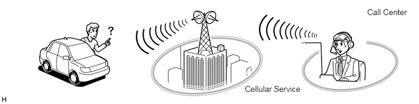

| Last Modified: 10-07-2025 | 6.11:8.1.0 | Doc ID: NM100000002GLC9 |
| Model Year Start: 2024 | Model: Tacoma | Prod Date Range: [12/2023 - ] |
| Title: TELEMATICS: TELEMATICS SYSTEM: GENERAL; 2024 - 2026 MY Tacoma Tacoma HV [12/2023 - ] | ||
GENERAL
OUTLINE
(a) The telematics system provides communication between the driver and call center, and links the audio head unit to data received from various content providers or servers. Received data (e.g. recent map data, data from content providers, etc.) is utilized by the audio head unit and displayed on the multi-display.
(b) The telematics system primarily consists of the following services.
HINT:
- The available services differ depending on the type of audio head unit or vehicle equipment.
- For details on available services, go to https://www.toyota.com/audio-multimedia/ or call 1-800-331-4331.
|
Services |
Outline |
|---|---|
|
*1: For details, refer to the Safety Connect
System.
*2: Models with manual (SOS) switch *3: It is available in the contiguous United States, Hawaii, Alaska, Canada and Puerto Rico. *4: For details, refer to the Audio and Visual System. *5: As it is a subscription service, a separate contract is required. *6: Destination Assist can be used when there is Navigation Function service contract. |
|
|
Safety Connect*1*2 |
Safety Connect is a subscription-based telematics service that uses the Global Navigation Satellite System (GNSS) and cellular service (telephone function). |
|
Remote Connect*2 |
Remote Connect can be controlled the vehicle remotely through data communication between mainly a Remote Connect capable Data Communication Module (DCM), the service center and a smartphone with the application installed. |
|
Service Connect*2 |
Service Connect compatible DCM sends to the service center. Each user can check vehicle information distributed by the service center on a smartphone or tablet with the dedicated application or on a dedicated web site. |
|
Navigation Function*3*4*5 |
By communicating with servers, the navigation function downloads map data, displays the current location on the multi-display, searches for routes, confirms traffic information and utilizes information of Points Of Interest (POI). |
|
Destination Assist*3*6 |
Destination Assist enables the call center to search for an address or the location of Points Of Interest (POI).The results from the call center search can be downloaded and set as a destination. |
|
IP Application Function*3*4 |
The IP application function utilizes various applications downloaded from servers on the audio head unit. |
|
Intelligent Assistant*3*4*5 |
By communicating with servers, Intelligent Assistant obtains information in real time, provides the voice recognition function with enhanced natural speech performance and offers tailored information for each user. |
PRECAUTION
- If an additional device such as a theft deterrent or OBD monitoring device is connected to the DLC3, some functions may not operate correctly.
MAIN FEATURES
(a) Remote Connect
(1) Remote Connect, with which the driver is able to check the vehicle state or control the vehicle remotely with a smartphone application.
(2) Remote Connect is available by installing a dedicated smartphone application after entering a service contract.
(3) Remote Connect are performed through data communication between mainly a Remote Connect capable DCM, the service center and a smartphone with the application installed.
(4) The remote services provided by Remote Connect are mainly classified into the following categories:
|
Category |
Description |
|---|---|
| *: Remote operations can only be performed when the vehicle is able to receive remote operation request signals, according to the vehicle status. | |
|
Remote Information |
Services which allow the user to check vehicle information on a smartphone. |
|
Remote Notification |
Services which send notifications to the user if the vehicle status exceeds a limitation set on a smartphone or when the user leaves the vehicle without performing specific operations. |
|
Remote Operation* |
Services which allow the user to perform certain vehicle operations using a smartphone. |
NOTICE:
As it may be dangerous to perform a remote operation without knowing the vehicle status, make sure to check the vehicle status before performing any remote operation.
HINT:
- Remote Connect is available in the contiguous United States, Alaska, Hawaii, Canada and Puerto Rico.
- Start and operate the Remote Connect system according to the instructions displayed on the application.
- The services of Remote Connect are subject to change and the services listed in this document may differ from the actual service.
- Remote operations will only be performed when all
of the necessary conditions are met. The main
conditions are as follows. For the remote engine
start and stop operation conditions, refer to Smart
Key System.
- The ignition switch is off
- The electrical key transmitter sub-assembly is not detected in the vehicle
- All of the doors are closed
- Remote operation is not already being operated
(b) Service Connect
(1) Service Connect, with which the driver is able to check maintenance information, etc. of the vehicle via a smartphone or tablet application or on a web site.
(2) Service Connect is available by installing a dedicated application into a smartphone or tablet after entering a service contract. It is also available via a dedicated web site.
(3) Service Connect consists of vehicle information that the Service Connect compatible DCM sends to the service center. Each user can check vehicle information distributed by the service center on a smartphone or tablet with the dedicated application or on a dedicated web site.
HINT:
- Service Connect is available in the contiguous United States, Alaska, Hawaii, Canada and Puerto Rico.
- The items provided by Service Connect are subject to change and the listed items may differ from the actual items provided by the service.
(c) Destination Assist
(1) Destination Assist enables the call center to search for an address or the location of Points Of Interest (POI).
(2) The results from the call center search can be downloaded and set as a destination.
(3) Destination Assist can be used when there is Navigation Function service contract.
